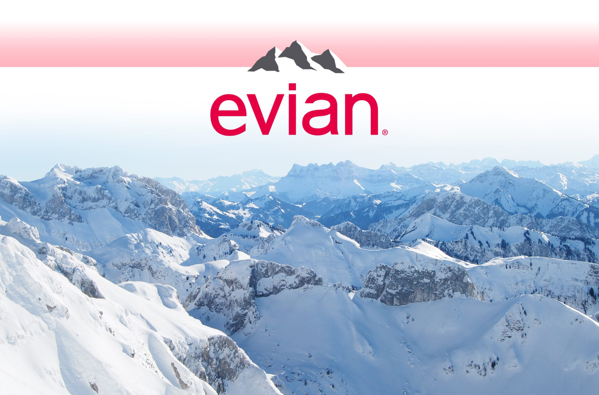

Our Water Evian natural spring water contains only naturally occurring
electrolytes from our unique origin. How? As our water travels to the
source through layers of glacial rocks, it becomes enriched with a
unique blend of minerals and electrolytes giving evian its
distinctive, cool, crisp taste. This protected underground journey in
the heart of the French Alps has given evian water its unique taste
and mineral composition for over 200 years since Marquis first
discovered it!

750 mL

750 mL

750 mL
 Electrolytes & Mineral Composition (mg/l)
Electrolytes & Mineral Composition (mg/l)Neutrally balanced pH: 7.2 Calcium: 80 / Magnesium: 26 / Potassium: 1 Bicarbonates: 360 / Sulfates: 14 / Chlorides: 10 / Silica: 15
evian hasnaturally occuring elecrolytes contributing to the taste nature intended.